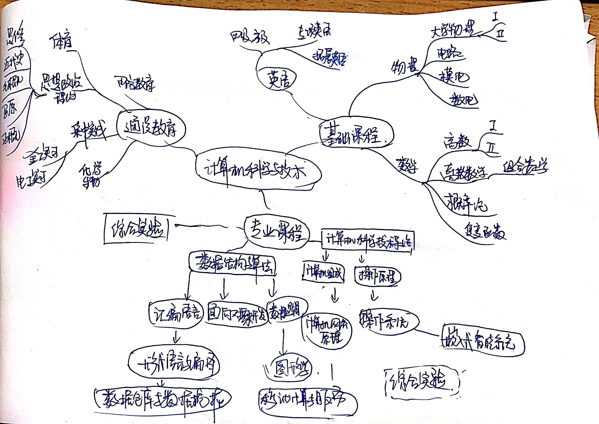

点击此按钮查看作者信息和参考文献
1. 你画出的计算机学科各课程之间的关系图:

2. 计算机学科各课程有用的参考资料:
（1）编译软件：
Python下载路径 ，Visual Studio下载路径
（2）教程：
菜鸟教程
（3）应用软件：
CSDN ，中国大学慕课
（4）西安交通大学在线图书馆：
西安交通大学在线图书馆
3. 你对计算机专业的认识:
计算机专业蓬勃发展，逐步人机混合智能化，并且成为其他学科专业的基础。而计算机本身具有复杂性和简单性，体现在其逻辑的严谨和思维的深邃，效率的提高和
解放人的自主能动性，因此计算机专业是一门综合性强，关联性高，发展迅速的专业。
首先，学习计算机专业并不是仅仅是学习其编程语言，其关键在于“构造，抽象，自动化”。在本学期第一节课计算技术发展的十大演化趋势中，提出我们要了解发展
规律及其对人类社会的巨大贡献， 感受传播计算机科学的快乐、崇高和力量，使计算科学、 技术和思维成为常识。强调了计算思维的重要，人类需求转换成计算机能
够识别的数学物理模型，再根据模型，建立与之关切最为紧密的相关算法，利用适当的数据结构进行数据处理，最终再由强大的语言功底将其实现。也就是说，计算机
功能的实现，需要一名对计算机专业基本功能掌握熟练的研究人员对整体格局进行把握，再分块实现。
其次，计算机+X=创新无限。计算机专业本身具有可研究性，同时也是可以优化其他专业的基础工具。计算机下本身科研方向多样，比如机器学习，人工智能，云安
全，网络相关，物联网，图像处理，等等。理论重视研究和发现，而工程应用重视实现和应用。因此，计算机专业涉及范围广，涉猎范围深，无论选择哪种方向都是
有路可达的。
最后，计算机专业在未来的发展，走向巨型化，智能化，多媒体化。功能上实现速度更快的、存储量更大的和功能更强大的巨型计算机，应用于尖端科学技术领域，
同时，具有模拟人的感觉和思维过程的能力，数字化技术的发展进一步改进了计算机的表现能力，多媒体技术使信息处理的对象和内容发生了深刻变化。因此，作为
计算机专业的同学，要紧跟时代脚步，在瞬息万变的计算机发展中，找到自己所属的研究方向。
4. 你的学业规划:
1）养成思考的整体观，对拿到的问题首先整体考虑其可能性以及可行性，再考虑分块逐步去破解
2）积极参加相关学科竞赛，以考促学，以考提高自身的素养、能力、水平和竞争力，见识广，能力强才能具有个人竞争力
3）积极参加社会实践活动和实习，锻炼自己的综合能力，与学长学姐做项目，与老师多交流，好的表达能力也是计算机专业的必备要求
4）专注学习但不两耳不闻窗外事，关注就业政策、社会发展形势等，提出自己的观点、培养自己独立思考的能力
5）研究同时增强硬实力。学业成绩达到优，专业知识扎实。积累项目经验，做好专利论文发表，争取比赛获奖，积累实习经验。
具体的实现方法：
要有计划的学习、生活和娱乐，合理分配时间坚持上晚自习的习惯，逐步吃透语言， 列长期、中期、短期计划，并逐步实行。 并且重视数学和英语基础学科，善用
搜索引擎，解决自学过程的疑惑，重视总结，培养自学能力。没事多上github刷题。